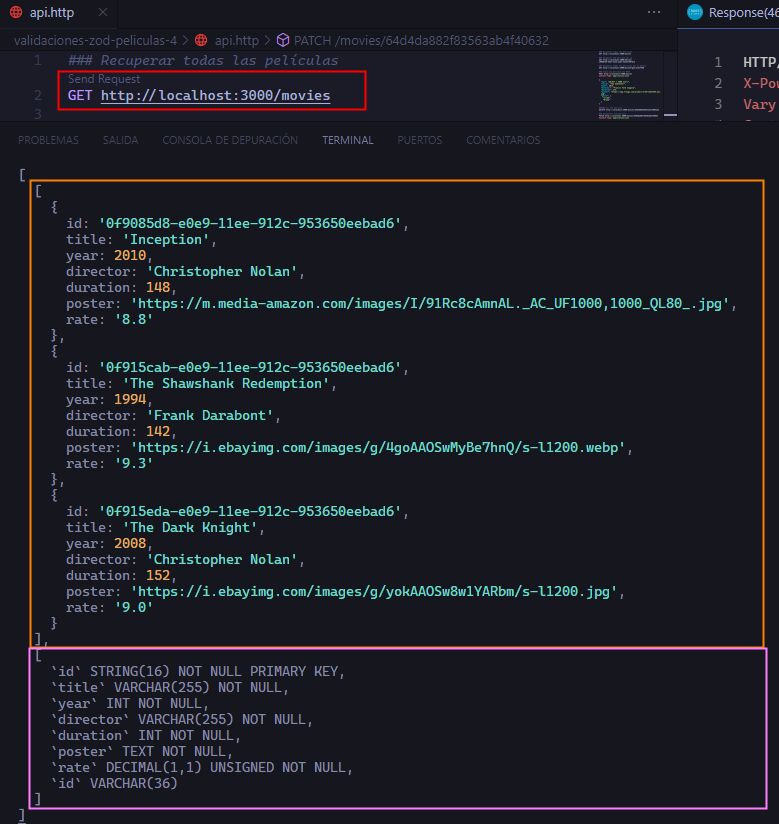
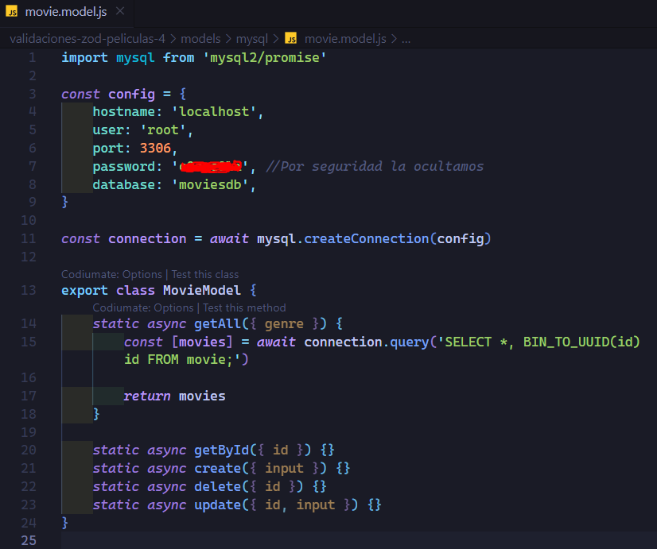
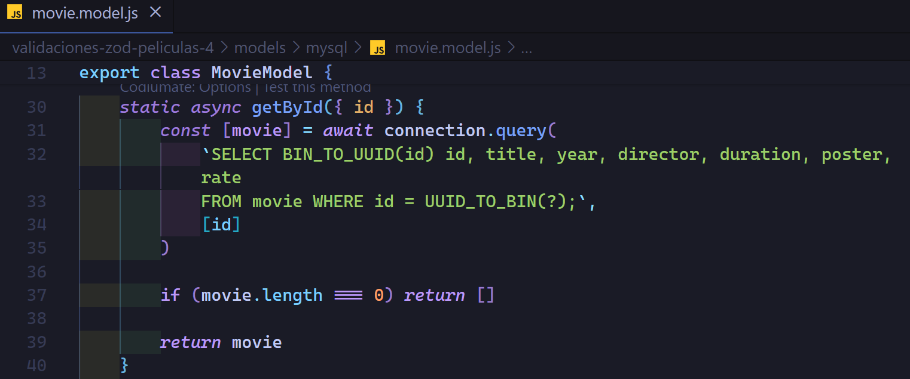

Crearemos nuestra base de datos para poder implementarla más adelante en nuestra API.
Utilizaremos MYSQL WORKWENCH.
Para poder entender algunas cosas de la base de datos es importante conocer las siguientes funciones que nos brinda MYSQL.
UUID():
La función UUID() en MySQL genera un UUID (Identificador Único Universal) aleatorio según la versión 1 de RFC 4122. Este UUID se devuelve como una cadena de caracteres en formato hexadecimal de 36 caracteres (32 dígitos y 4 guiones).
Es útil cuando se necesita generar un UUID único para su uso en inserciones de datos o en operaciones de manipulación de datos.
BIN_TO_UUID(binario):
Esta función toma un valor binario de 16 bytes (128 bits) como entrada y lo convierte en su representación de cadena de caracteres UUID (36 caracteres, incluyendo guiones).
Es útil cuando se almacenan UUID como datos binarios en la base de datos y se desea convertirlos para mostrarlos o para otros fines de manipulación de datos.
UUID_TO_BIN(string):
Esta función toma un UUID como una cadena de caracteres (en formato estándar de 36 caracteres, incluyendo guiones) y lo convierte en su equivalente binario de 16 bytes.
Es útil cuando se necesitan insertar UUID en una base de datos MySQL que almacena UUID como datos binarios.
Estas funciones son específicas de MySQL y no están disponibles en otros sistemas de gestión de bases de datos (DBMS) por defecto. Sin embargo, otros sistemas de bases de datos pueden proporcionar funciones similares para trabajar con UUID y datos binarios, aunque pueden tener nombres diferentes.
Instalación de dependencias para la conexión de base de datos
Antes de instalar las dependencias necesitamos tener ya la estrucutura de nuestro modelo, siguiendo el ejemplo de los modelos anteriores.
Ahora si procedemos a instalar nuestra dependencia pero primero necesitamos instalar de manera global pnpm ya que para instalar nuestra dependencia para mysql utiliza pnpm.
Ahora si instalamos nuestra dependencia mysql2 con el comando
pnpm i --save mysql2 Instalación de mysql2
Esta es la dependencia más actualizada para trabajar con mysql.
Haciendo conexión
Ahora en nuestro modelo importamos la dependencia y establecemos nuestra configuración para poder conectarnos a la base de datos.
El password no lo hemos puesto por seguridad, pero es importante ponerlo.
Una vez creado la configuración para nuestra base datos, ahora crearemos la conexión.
Hasta el momento así quedaría nuestro archivo sin comentarios, solo agregamos un console.log(result) para que cuando provemos nuestra conexión veamos que devuelve.
Antes de provar nuestra conexión es importante que en nuestro controlador le indiquemos que modelo utilizará, le indicamos que utilize el modelo MovieModel de mysql.
Solo con este cambio ya estamos cambiando de donde saca la información, si de mongodb, mysql o del archivo de la memoria, solo con el cambio de una línea de código.
Normalmente mucha gente piensa que tenemos que hacer cambios en todos los sitios, que la migración es muy complicada, es por eso que es muy importante tener las responsabilidades separadas como lo hemos hecho nosotros, así la migración es muy fácil.
Ahora si, antes de levantar nuestra API no nos olvidemos de poner nuestra contraseña en la configuración, y otra cosa más, estaremos utilizado REST CLIENT para probar nuestra API, solo hemos creado un archivo api.http en la raiz y hemos agregado todos nuestros endpoints.
Método getAll()
Ahora si procedemos a levantar nuestra API y ejecutamos nuestro endpoint en nuestro archivo api dando click a Send Request para recuperar todas las películas y poder ver en consola el valor el resultado que establecimos en el método getAll({genre}) del modelo para mysql.

Como podemos ver lo que devuelve el resultado de nuestra consulta a la base de datos cuando hacemos: const result = await connection.query('SELECT *, BIN_TO_UUID(id) id FROM movie;') Es una tupla con la siguiente estructura [ [ Resultado de la consulta ] , [ Información de la tabla ] ] Donde en el primer array tenemos el resultado de la consulta, devuelta en objetos, cada objeto es una fila(registro) de la tabla: [ [ {fila 1}, {fila 2}, .... ], [ ] ] Ahora el segundo array es la estructura de la tabla de donde estamos sacando la información [ [ {fila 1}, {fila 2}, .... ], [ id string(16) not null, etc] ]
Ahora que ya sabemos que el resultado nos lo devuelve en una tupla lo que haremos es ocupar la destructuración.
Así quedaría nuestro método getAll() del modelo.
Y nuestro archivo del modelo completo hasta el momento quedaría de la siguiente manera, ya sin comentarios.

Como podemos ver ahora sí obtenemos una respuesta correcta, ya que anteriormente aunque no lo mostramos, la respuesta de la API daba un error ya que no estabamos retornando nada, pero en este caso ya estamos retornando las movies y podemos ver el resultado ya correcto.
Ahora en nuestro mismo método solo nos falta la funcionalidad de devolver todas las peliculas que pertenezcan a un género en específico, y esto es cuando nos pasen un parámetro de consulta (query param).
Para hacer esa funcionalidad, hay varias opciones como, poner toda una consulta compleja en el método query como pueden ser subconsultas, o hacer varias consultas por separado para evitar las subconsultas, pero nosotros optamos por crear un store procedure en nuestra base de datos y que se encarge de la lógica para traer todas las películas que coincidan con el género que pasemos por parámetros en el store procedure que llamaremos SP_getAllMoviesGenre
Antes de continuar con la funcionalidad ocuparemos marcadores de posición (?) en consultas SQL para pasarles un parámetro o parámetros por separado. Este enfoque se conoce como consulta preparada o consulta parametrizada.
El uso de consultas preparadas, evita riesgos al separar claramente la consulta SQL de los datos proporcionados por el usuario. La librería de MySQL (en este caso mysql2) manejará adecuadamente la interpolación de los datos proporcionados, asegurando que no se puedan interpretar como parte de la estructura de la consulta SQL, sino que se traten como valores seguros. Esto protege tu aplicación contra inyecciones de SQL.
Veamos como queda nuestro método getAll del módelo ya con la funcionalidad de filtrar péliculas por género.
Ahora si provemos el resultado de filtrar las películas por genéro por medio de un param query.
Así quedaría nuestro método getAll() del modelo ya sin comentarios.
Método getById
Así quedaria nuestro método getById
Veamos el resultado de filtrar por un id.
Así queda nuestro método ya sin comentarios

Método create()
Ya sabemos que en este método crearemos una nueva película para insertarla en la base de datos.
Es obvio que utilizaremos el método POST, así que veremos la respuesta que se generá cuando hacemos una insersión a la base de datos desde el backend.
Cuando insertamos, eliminamos o actualizamos en la base de datos desde el backend, obtenemos un objeto llamado resultSetHeader .
Este objeto generalmente contiene metadatos sobre el resultado de la consulta y puede variar en sus propiedades dependiendo del sistema de gestión de bases de datos (DBMS) y del cliente de base de datos que estés utilizando.
ResultSetHeader {
fieldCount: 0,
affectedRows: 0,
insertId: 0,
info: ''
serverStatus: 2,
warningStatus: 0,
changedRows: 0
}
fieldCount: Indica la cantidad de campos en el resultado de la consulta. En algunas operaciones, como las inserciones, este valor puede ser 0.
affectedRows: Representa el número de filas afectadas por la operación realizada, como la cantidad de filas insertadas, actualizadas o eliminadas.
insertId: Especifica el ID asignado a la fila recién insertada en el caso de una inserción exitosa. Esto es relevante para tablas que tienen una columna con una restricción de autoincremento, lo que quiere decir que solo devuelve el ID siempre y cuando el campo en la bd sea autoincrement de lo contrario devolverá 0 o null.
info: Proporciona información adicional relacionada con la operación realizada. Puede incluir mensajes de error, advertencias u otra información relevante devuelta por el servidor de la base de datos.
serverStatus: Indica el estado del servidor de base de datos después de ejecutar la consulta. Por ejemplo, un valor de 2 generalmente indica que la operación se completó correctamente.
warningStatus: Representa el estado de advertencia del servidor después de ejecutar la consulta. Un valor de 0 indica que no hay advertencias.
changedRows: Indica el número de filas que se vieron afectadas por la última operación, como el número de filas actualizadas en una consulta de actualización.
Inserción en la base de datos sin un ID para que la misma BD le asigne un ID, pero ya sabemos que necesitamos el mismo contrato en el modelo por lo cual si no pasamos un ID, el objeto ResultSetHeader no nos devolverá el ID que la base de datos le puso por defecto, ya que sabemos que solo devuelve los ID autoincrementables.Como podemos ver el resultado de la inserción no nos devuele el ID, y lo necesitamos por que el modelo debe tener el mismo contrato.
Para solucionar esto, lo que podemos hacer, es hacer una consulta a la base de datos para que nos genere un ID ya ya después insertarlo de manera explícita en nuestra query, tambien podemos ocupar el módulo crypto para generar un UUID, pero lo haremos consultando a la base de datos.
Hasta este punto nuestro código sin comentarios quedaría así.
Ahora solo falta agregar a nuestra tabla movie_genres los generos de la película que acabamos de insertar, la tabla movie_genres nos pide el id de la película y el genéro.
Así quedaría el código sin comentarios.
Cometimos un pequeño error solo hemos cambiado el nombre de genero a genres para que sea correcto de acuerdo a nuestra schema.
Resultado de nuestra inserción.
Comprobaciones de los registros insetados en nuestra base de datos.
Tabla movie, podemos ver nuestra película la nueva jerusalen.Tabla movie_genres, podemos ver los géneros insertados relacionados con la película.Desde nuestra base de datos podemos hacer un join multiple para juntar los registros de la tabla.
Método delete()
Método update()
Para actualizar los datos, tenemos que checar la estructura de nuestra tabla movie_genres, ya que cuando actualizamos información de una película podemos cambiar los géneros, y estos géneros nosotros en nuestra bd los manejamos en una tabla aparte donde está ligado con el id de la película y el id del género, veamos la estructura:
Veamos los registros que tenemos actualmente en esa tabla
Para actualizar por ejemplo un género de una película en dicha tabla, se nos puede ocurrir lo siguiente que es lo más obvio que hariamos.
Pero obtenemos el siguiente error.
Error Code: 1062. Duplicate entry ':\xAC\x14\xD3\xE65\x11\xEE\xB14\x84\x13\xD3\xE7\x0C\x86-3' for key 'movie_genres.PRIMARY'
Nos dice que ya tenemos un registro con los mismos datos, con el mismo id de película y id de genero, lo cual sabemos que no es así, sino que el error en realidad se debe a lo siguiente.
Tenemos una clave primaria compuesta formada por las columnas movie_id y genre_id, entonces no podremos modificar directamente ninguno de estos valores, ya que la combinación de ambos forma una clave única para cada registro en la tabla.
La razón por la que estamos recibiendo el error es porque al intentar actualizar el genre_id para un movie_id específico, estamos esencialmente intentando cambiar la clave primaria de ese registro. Sin embargo, hay que recordar que las claves primarias (compuestas o no) están diseñadas para ser identificadores únicos e inmutables de las filas en una tabla, por lo que no pueden modificarse directamente.
Para solucionar eso, lo que debemos hacer es eliminar primero el registro de la tabla movie_genres de la película Inception con el género Action en este caso.
Una vez hecho esto lo que haremos es insertar ahora el nuevo registro de la misma película pero con un género diferente, en este caso estamos agregando el genre_id con id 3 que pertenece al género Crime.
Ahora veamos como hacerlo en código desde Express.